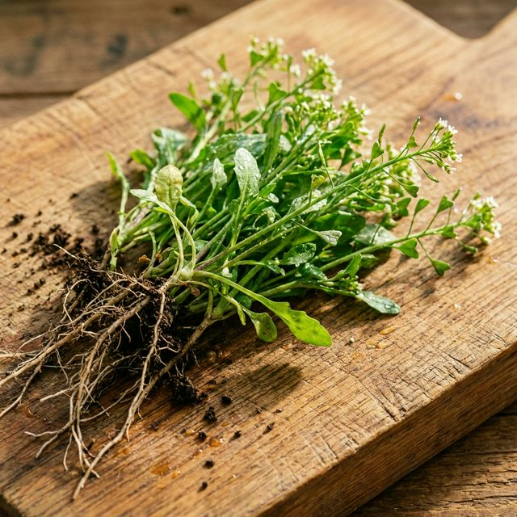
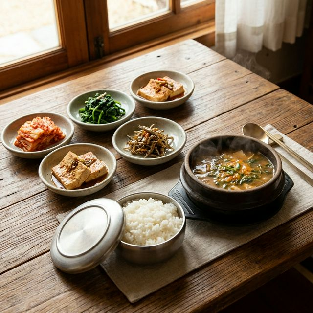

어르신들, 대표님들 안녕하시지요? 🙇♂️ 요새 날 풀리면서 몸이 찌뿌둥하고, 입맛도 뚝 떨어지신 분들 많으실 겁니다. "이제 나이 먹어서 체력이 예전 같지 않다"고 한숨 푹푹 쉬시면 안 됩니다.
이럴 때일수록 비싼 홍삼, 녹용 찾으실 필요 없습니다. 우리 몸속, 특히 겨우내 웅크렸던 '간'의 독소를 쫙 빼주고 춘곤증을 한 방에 날려버릴 명약이 바로 지천에 널려 있거든요. 🌱

봄나물 중에서도 단백질 함량이 가장 높고, 비타민과 칼슘, 철분이 꽉꽉 들어찬 채소가 바로 냉이입니다. 특히 냉이에 들어있는 '콜린' 성분은 우리 몸속 간에 낀 지방을 분해해주고, 피로 물질을 청소하는 호위무사 역할을 톡톡히 합니다. 🛡️
게다가 우리나라 발효의 정수, '된장'과 만나면 장 튼튼, 간 튼튼! 몸의 면역력이 200% 폭발하는 최고의 항산화 밥상이 완성됩니다. 💪
어렵게 생각하실 것 전혀 없습니다. 며느리도 깜짝 놀라 뒤로 넘어갈, 깊고 향긋한 냉이 된장찌개 황금 레시피를 지금 바로 공개합니다! 📝
냉이 2줌 (꼭 뿌리째!), 두부 1/2모, 감자 1개, 양파 1/2개, 대파 약간
육수용 멸치 한 줌, 된장 2큰술, 고춧가루 1/2큰술, 다진 마늘 1/2큰술
1. 냉이 손질: 칼등으로 뿌리의 흙만 살살 긁어내고 잎사귀 누런 부분만 떼어냅니다. (뿌리가 너무 굵고 질긴 것은 반으로 쪼개주세요!)
2. 육수 빼기: 뚝배기에 멸치를 넣고 끓여 구수한 육수를 우려낸 뒤 된장을 채망에 걸러 부드럽게 풉니다.
3. 채소 끓이기: 안 익는 감자, 양파 등 단단한 채소를 먼저 넣고 보글보글 끓입니다.
4. 냉이 점화: 채소가 익을 즈음 두부와 마늘, 고춧가루를 넣고 가장 마지막 불 끄기 직전에 냉이를 듬뿍 얹어줍니다.
5. 1분 완성: 냉이는 너무 오래 끓이면 특유의 향이 죽고 질겨집니다. 숨만 살짝 죽으면 바로 불을 끄세요! 🍲
이렇게 끓인 냉이 된장찌개 한 숟가락이면, 겨울 내내 입 안이 텁텁했던 것도 싹 가시고 밥 두 그릇은 거뜬히 비우게 됩니다. 🍚😋
